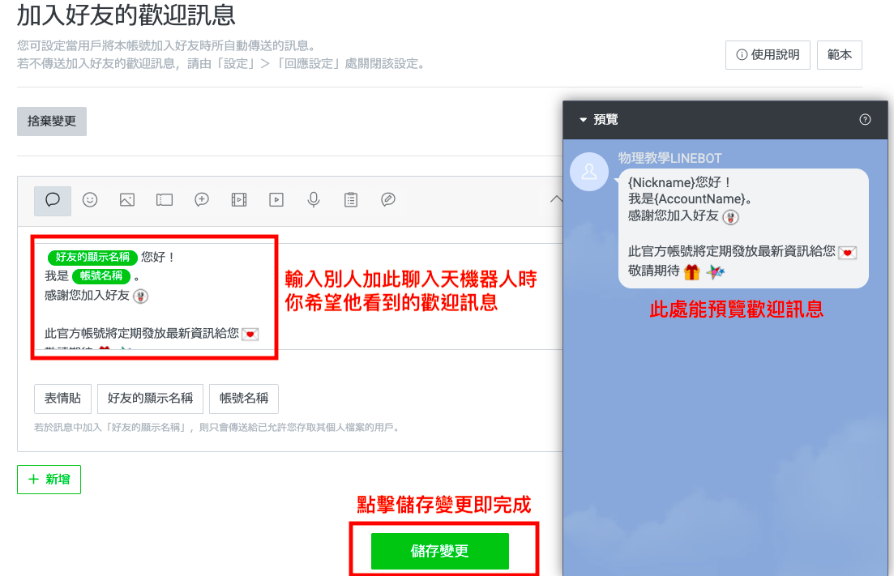

LineBot第二節課
2/16 2022
類別：程式教學
讓LineBot聊天機器人開始有聊天功能
這節課，我們先分享利用Line官方帳號管理的方式設定LineBot的聊天功能，未來再介紹透過自己撰寫程式的方法開發其更多的回覆功能。
至Line官方帳號管理平台(https://tw.linebiz.com/login)，登入已申請的官方帳號
從帳號一覽中，選擇上節課建立的LineBot進行設定。
進入後的界面如下圖所示，左邊直排的選單主要是設定LineBot的基本功能，上方橫排的選單主要是運作時會運用到的工具。
我們可以自己先加入此LineBot為好友進行測試，要加入它為好友的方法可從左邊選單中往下滑，選擇增加好友人數下方的加入好友指南。
此時右方會出現4個增加好友人數的方法，未來可以視情形，選擇適合的方式讓其它人來加我們的LineBot當好友。
我們先選擇較簡單的方式建立行動條碼來加入LineBot。
加入後，LineBot會跳出歡迎訊息，你也可以丟訊息給它，但LineBot暫時還不會有回應。
這時，我們回到Line官方管理平台，選擇上方的聊天。
回應模式選擇聊天，未來若使用程式進行開發需再更改為「聊天機器人」。
此時你可以透過此區和好友進行聊天，未來若有開啟自動回應功能，也能在此切換手動回應或自動回應。
接下來我們要來設定加入LineBot時，使用者會看到的歡迎訊息和自動回應訊息。
這兩個功能的設定皆在左邊直排的選單中，如下圖所示。
我們先選擇加入好友的歡迎訊息進行歡迎訊息的修改。
點擊後會進到編輯區，可在此編輯歡迎訊息，也能選擇下方的「表情貼」、「好友的顯示名稱」及「帳號名稱」增加互動性。
右方也可以預覽從Line上看到的樣子，方便做修改。
當設定完成後，點擊儲存變更即完成。
未來若有人加入此LineBot為好友，將會看到此歡迎訊息。
A:你可以在你自己Line中的好友選單中暫時封鎖此LineBot，當解除封鎖時也能看到LineBot修改後的歡迎訊息。 
接下來我們要來設定自動回覆，有了自動回覆功能，我們將不用一一手動回覆每個使用者，而讓我們的LineBot真正有聊天機器人的功能。
我們選擇左邊直式選單的自動回應訊息，進行自動回應的設定。
接著在右上角點擊建立，建立新的自動回覆訊息。
建立自動回覆訊息時，要給予標題名稱，但這只是方便未來管理，使用者並不會看見。我們這裡的練習標題可先打「test」。
回應的狀態選擇開啟，指定時間先暫時不管，未來可視使用需求指定回應時間。
接著要設定關鍵字，當使用者的訊息為關鍵字時，LineBot將會回應我們設定的訊息，關鍵字可以不只一個，例如此練習，我們設了「123」、「456」、「789」三個關鍵字。
最後再於下方編輯區輸入我們希望自動回應的訊息為何，此練習我們設定為「答對了」，並且可從右方區域進行預覽。
但此時如果在Line上進行測試，會發現LineBot並不會自動回應我們，因為LineBot的初始設定為手動回覆，需要在設定上作修改，才能有自動回覆的功能。
我們可以點擊在Line官方帳號管理平台上方的回應模式進行修改。
進到回應模式後，於下進階設定區，將回應時間選擇為開啟，回應方式選擇手動聊天，非回應時間選擇自動回應訊息。
此時可以回到Line上進行測試，這時LineBot就能夠自動回覆訊息。
若使用者的訊息不是關鍵字，預設為「感謝您的使用，這是自動回覆訊息」，此回答內容也可於自動回應設定中作修改(建立一個自動回應，並將關鍵字空白，此時設定的回答即為非關鍵字時的回應)。
若於使用過程中，LineBot想手動回應對方訊息，可至聊天的設定，將回應時間關閉，回應方式選擇手動聊天即可。
或是回應時間開啟，於設定回應時間調整哪些時間為回應時間，哪些時間為非回應時間，在回應時間的時候，即可以手動聊天。
此時可利用自動回覆的設定，讓你的LineBot能和使用者自動對話，試著建立更多自動回覆，滿足你LineBot的需求吧!